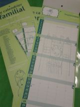

APE Jules Verne
Page de l'association des parents d'élèves de l'école Jules Verne
Page de l'association des parents d'élèves de l'école Jules Verne
L'APE organise avec l'équipe enseignante et le personnel de la cantine le gouter de noël des enfants.
L'APE organise une vente de sapins de noël, en association avec un pépiniériste de Betton.

L'APE organise une vente de bulbes et autres graines de fleurs, des mots ont étés distribués dans les cahiers.
Les bons de commandes sont à retourner pour le 06 novembre.

Cette année l'APE organise une vente de calendriers familiaux, édités par l'association des Korrigans de Saint Médard sur Ille.
Ils sont vendus au prix de 6€ et seront distribués devant l'école le vendredi 26 septembre devant l'école.
Il reste quelques calendriers, contactez l'APE si vous en avez réservé ou si vous voulez en acheter.

L'assemblée générale de l'association s'est tenue le 10 octobre 2014
Composition du bureau pour l 'année scolaire à venir
L’A.P.E. organise des manifestations avec deux objectifs : créer une animation autour de l'école et faire en sorte que les enfants, les parents et les enseignants se rencontrent hors cadre scolaire recueillir des fonds et participer ainsi au financement des activités péri-scolaires (sorties, spectacles, classe de neige, classe verte, classe de mer… la liste n’est pas exhaustive).
L’A.P.E. prend part au financement de diverses actions durant l’année scolaire :
Pour l'organisation des manifestations (faire les courses, préparation de la salle, cuisine, service, nettoyage, tenir un stand pour la kermesse…).
Vous pouvez, en nous contactant, vous inscrire pour nous aider de différentes manières:
Bien sûr, le fait d'être membre actif ne vous oblige pas à participer à toutes les réunions, manifestations. Chacun fait selon ses disponibilités. C'est lors de la fête de juin que le besoin en personnel est le plus important.
Toute l’équipe actuelle vous remercie par avance pour l’aide que vous pourrez lui apporter. Si vous avez de nouvelles idées n’hésitez pas à nous en faire part.